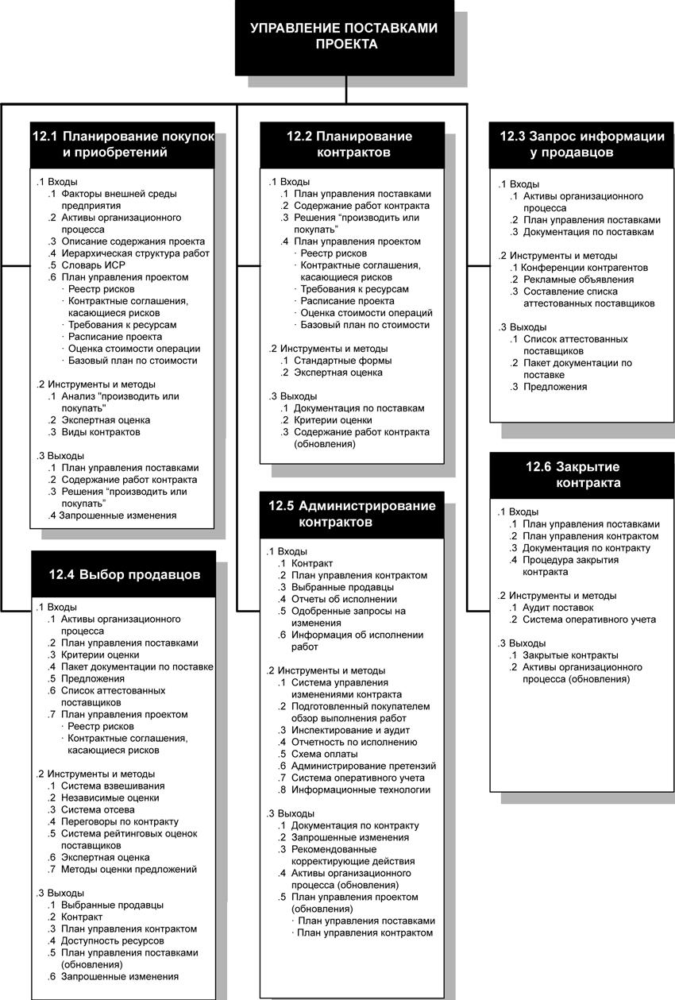
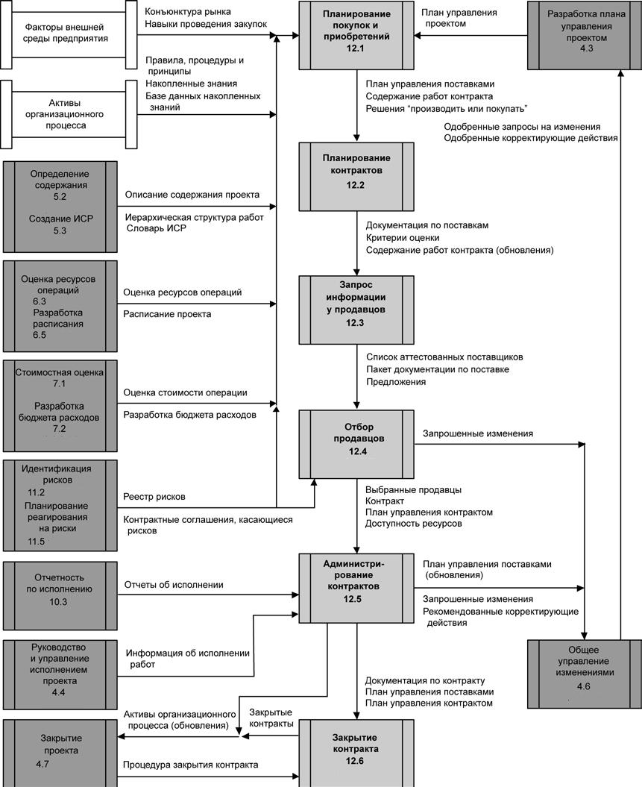

Введение
Управление поставками проекта включает в себя процессы покупки или приобретения тех необходимых продуктов, услуг или результатов, которые производятся вне исполняющей организации. В данной главе поставки рассматриваются с двух точек зрения: продавца и покупателя. Согласно условиям контракта организация может выступать в качестве продавца или покупателя продукта, услуги или результатов.
Управление поставками проекта включает в себя процессы управления контрактом и управления изменениями, необходимые для администрирования контрактов или заказов на покупку, подготовленных членами команды проекта.
Управление поставками проекта также предусматривает администрирование всех контрактов на приобретение проекта, заключенных сторонней организацией (покупателем) с исполняющей организацией (продавцом), а также администрирование контрактных обязательств команды проекта.
На рис. 15.1 приведена общая схема процессов управления поставками проекта, а на рис. 15.2 показана диаграмма зависимостей этих процессов и их входы, выходы и другие процессы из других областей знаний.

Рисунок 15.1 - Общая схема управления поставками проекта

Рисунок 15.2 - Диаграмма зависимости процессов для процесса управления поставками проекта
Процессы управления поставками проекта включают в себя следующие элементы:
12.1 Планирование покупок и приобретений - определение того, что необходимо купить или приобрести, а также когда и на каких условиях.
12.2 Планирование контрактов - представление в документальном виде требований к продуктам, услугам и результатам, которые необходимо приобрести, а также определение потенциальных продавцов.
12.3 Запрос информации у продавцов - получение информации, расценок, оферт или предложений (в зависимости от поставки) от продавцов.
12.4 Выбор продавцов - анализ предложений, отбор потенциальных продавцов и обсуждение условий контракта с каждым продавцом.
12.5 Администрирование контрактов - включает в себя:
- управление контрактом и взаимоотношениями между покупателем и продавцом,
- анализ и документальное оформление текущей и прошлой деятельности продавца для определения необходимых корректирующих действий и обеспечения основы для будущих отношений с продавцом,
- управление изменениями, связанными с контрактом,
- управление контрактными взаимоотношениями со сторонним покупателем проекта (при необходимости).
12.6 Закрытие контрактов - завершение каждого контракта, включая разрешение всех открытых вопросов и закрытие каждого контракта, относящегося к проекту или к фазе проекта.
Процессы управления поставками проекта включают в себя работу с контрактами - юридическими документами, заключенными между покупателем и продавцом.
Контракт - это взаимное соглашение, обязывающее продавца предоставить указанные продукты, услуги или результаты, а покупателя - предоставить продавцу денежное или иное надлежащее встречное удовлетворение. Контракт фиксирует юридические отношения, все споры по которым могу быть урегулированы в судебном порядке. Соглашение может быть простым или сложным; в нем может быть отражена простота или сложность результатов поставки. Контракт включает в себя положения и условия; в него могут быть также включены иные пункты, например предложения продавца или документация по маркетингу, а также любая другая документация, на которой покупатель основывает свои требования к тому, что продавец должен выполнить или создать. В обязанности команды управления проектом входит участие в адаптации контракта к конкретным нуждам проекта.
В зависимости от области приложения контракты могут называться договорами, субдоговорами или заказами на покупку. В большинстве организаций имеются документально оформленные нормы и правила, определяющие, кто обладает правом подписи и администрирования таких соглашений от имени организации.
Хотя все документы проекта в той или иной форме анализируются и проходят процедуру одобрения, но процесс одобрения контракта обычно бывает более длительным в силу обязательности юридической ответственности, которую он накладывает. В любом случае в процессе обсуждения и утверждения основное внимание уделяется на точное описание в юридических терминах продуктов, услуг или результатов в соответствии с потребностями проекта. В случае, когда большие проекты выполняются государственными или муниципальными органами, процесс согласования может предусматривать публичное обсуждение договора.
Команда управления проектом может заранее обратиться к помощи специалистов в области контрактов, поставок и права. Обращение к таким специалистам за помощью должно согласоваться с корпоративной политикой организации.
Различные операции, входящие в состав процесса управления поставками проекта, образуют жизненный цикл контракта. Активное управление жизненным циклом контракта и тщательно выверенные формулировки положений и условий контракта позволят избежать или ослабить некоторые из идентифицируемых рисков проекта. Заключение контракта на поставку продукта или оказание услуг является одним из способов распределения ответственности по управлению и принятию на себя потенциальных рисков.
Сложный проект может предполагать управление - последовательно или одновременно - несколькими контрактами или субконтрактами. В таких случаях жизненный цикл каждого контракта может заканчиваться во время любой из фаз жизненного цикла проекта. Управление поставками проекта рассматривается с точки зрения отношений покупатель-продавец. В любом проекте отношения покупатель-продавец могут реализовываться на разных уровнях и затрагивать как различные внутренние подразделения, так и внешние организации по отношению к организации заказчика. В зависимости от области приложения продавец может именоваться подрядчиком, субподрядчиком, исполнителем, поставщиком или поставщиком услуг. В зависимости от положения покупателя в цикле приобретений проекта покупатель может называться клиентом, заказчиком, генеральным подрядчиком, подрядчиком, организацией заказчика, правительственной организацией, заказчиком услуг или покупателем. На протяжении жизненного цикла контракта продавец может рассматриваться как контрагент, предлагающий цену, затем как выбранный поставщик и наконец как поставщик или исполнитель, имеющий контрактные обязательства.
Обычно продавец осуществляет управление работой как проектом, если предметом приобретения не являются материалы, изделия или обычные продукты. В этом случае:
- Покупатель становится заказчиком и в силу этого является ключевым участником проекта для продавца
- Команда по управлению проектом со стороны продавца должна участвовать во всех процессах по управлению проектом, а не только в процессах из данной области знаний
- Положения и условия контракта становятся ключевыми входами для многих процессов управления со стороны продавца. Контракт может содержать непосредственно входы (например, основные результаты поставки, ключевые контрольные события, определение затрат) или ограничивать возможности выбора для команды проекта (например, в проектах по проектированию и дизайну часто оговаривается необходимость одобрения покупателем вопросов назначения персонала).
В изложении материала предполагается, что покупатель элементов проекта входит в команду проекта, а продавец не является членом команды проекта. Такие отношения имеют место, если исполняющая организация является продавцом проекта заказчику. Такие отношения также имеют место, если исполняющая организация является покупателем продукции, услуг, результатов или элементов подпроекта, используемых в проекте, у других исполнителей или поставщиков.
Предполагается, что между продавцом и покупателем выработано и действует официальное контрактное соглашение.
Однако большая часть материала данной главы в равной мере относится и к неконтрактным формальным соглашениям, заключенным с другими подразделениями организаций команды проекта.